Presentación
¡Conozcámonos!
¡Hola a todos!
¿Podrían compartir un poco sobre ustedes?
Digan su Nombre, su profesión ideal o en dónde les gustaría emprender, y qué les llama la atención sobre esta clase.
¡Conozcámonos!
- Soy Oscar Bustos
- Ingeniero Mecatrónico, PhD. (c) en Ingeniería - PUJ
- Docente Javeriano, Tech Manager en Mercadolibre
- Me gusta todo lo relacionado con IA / Advanced Analytics
Evaluación y Logística
Estructura del Curso
- Exposición Asíncrona
- Exposición 10%
- Talleres
- Talleres 40%
- Un taller por clase
- Proyecto Final
- Entrega 1: 25%
- Entrega 2: 25%
Reglas
- Todas las clases tienen un taller práctico asociado, para entregar los domingos a las 11:59pm
- Los talleres se resuelven y envían en parejas.
- El proyecto en grupo debe ser integrado por 4 personas, 2 parejas idealmente.
- Todas las entregas se hacen a través del Campus Virtual
Reglas - Continuación
- Todas las clases son presenciales. No obstante, se pueden transmitir virtualmente a petición de algún estudiante.
- Las clases empiezan a las 7:10am y terminan a las 9:30am
- Esta es una clase amigable con la IA. Se promueve el uso de la IA para generación de código Python para que el estudiante se enfoque en el análisis de los datos y de los modelos.
- Para garantizar un ambiente agradable y libre de distracciones para todos, les agradecemos no fumar ni vapear durante la clase.
- Con el fin de mantener la limpieza, no consumir alimentos en el salón.
Lecturas
- Todos los libros se encuentran en la plataforma de Springer Nature y O'Reilly
- Se puede acceder a través de los recursos virtuales de la biblioteca: Enlace Biblioteca
Libros de la Clase
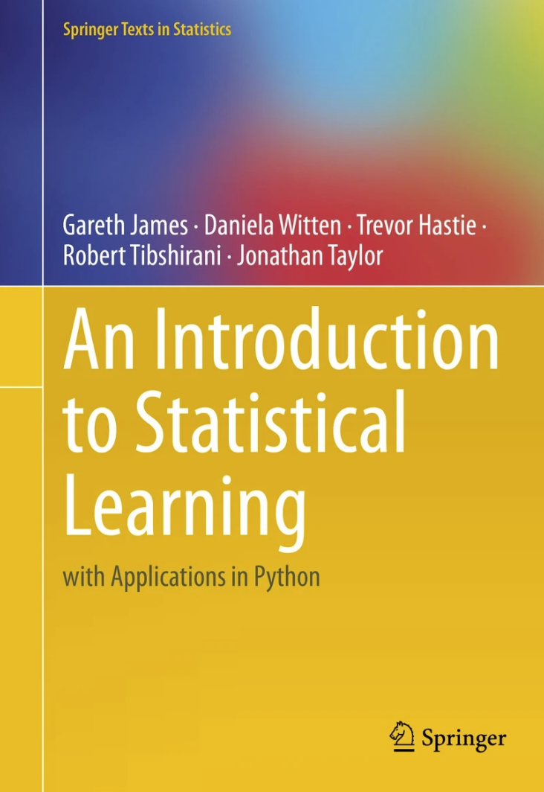
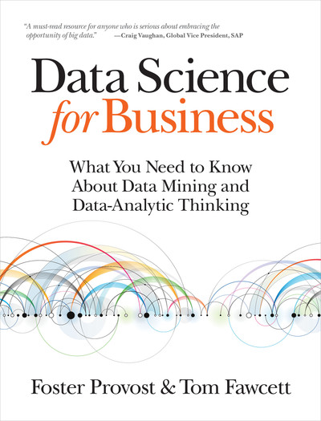

Cronograma
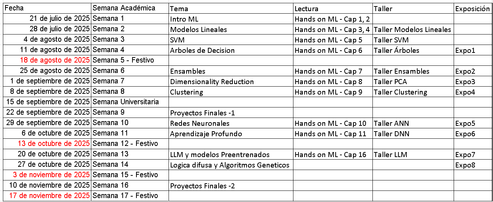Motivación de la Clase
Roles Orientados a Datos
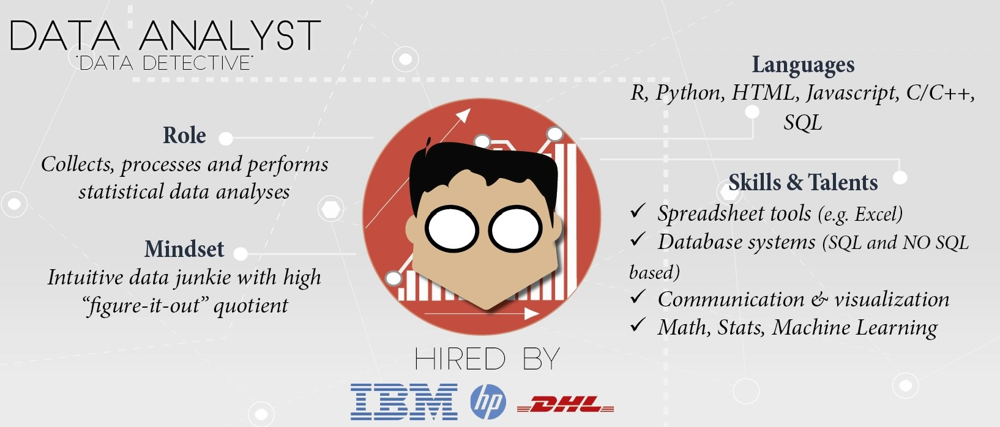 Tomado de: datacamp.comRoles Orientados a Datos
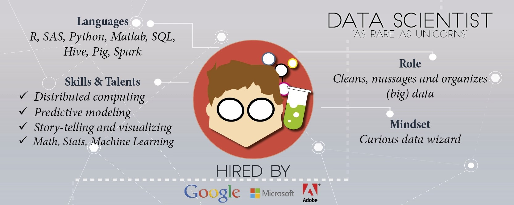 Tomado de: datacamp.comRoles Orientados a Datos
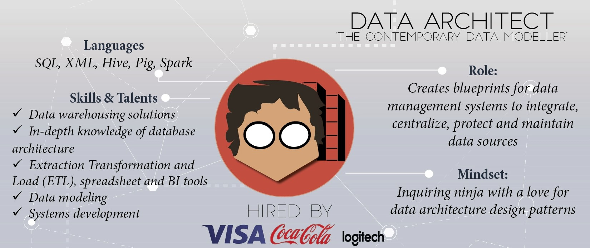 Tomado de: datacamp.comRoles Orientados a Datos
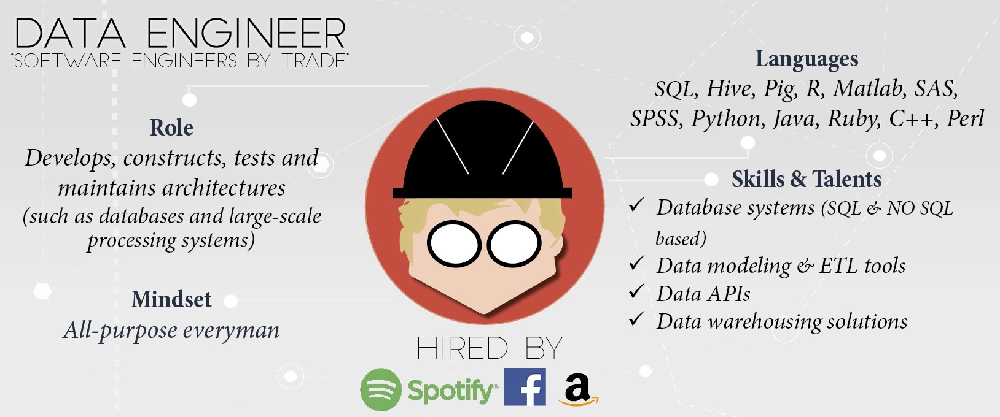 Tomado de: datacamp.comRemuneración
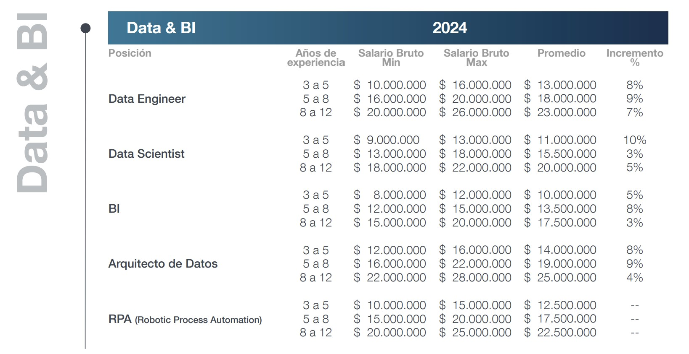 Tomado de: michaelpage.com.coObjetivos de Formación
- Herramientas Prácticas: Brindar herramientas de Machine Learning para el desarrollo de soluciones a problemas reales.
- Desarrollo de Habilidades: Aplicar conceptos fundamentales para fortalecer la capacidad de abstracción y la resolución de problemas.
- Conciencia Crítica: Generar reflexión sobre el impacto social y las implicaciones éticas del Machine Learning.
Resultados de Aprendizaje
Al finalizar el curso, el estudiante podrá:
- Resolver Problemas: Aplicar principios de Machine Learning para solucionar problemas.
- Validar Soluciones: Diseñar experimentos para evaluar la efectividad.
- Actuar con Ética: Discutir y aplicar la responsabilidad ética y social.
Libros - Ética en IA


Aprendizaje de Máquina (ML)
Aprendizaje de Máquina
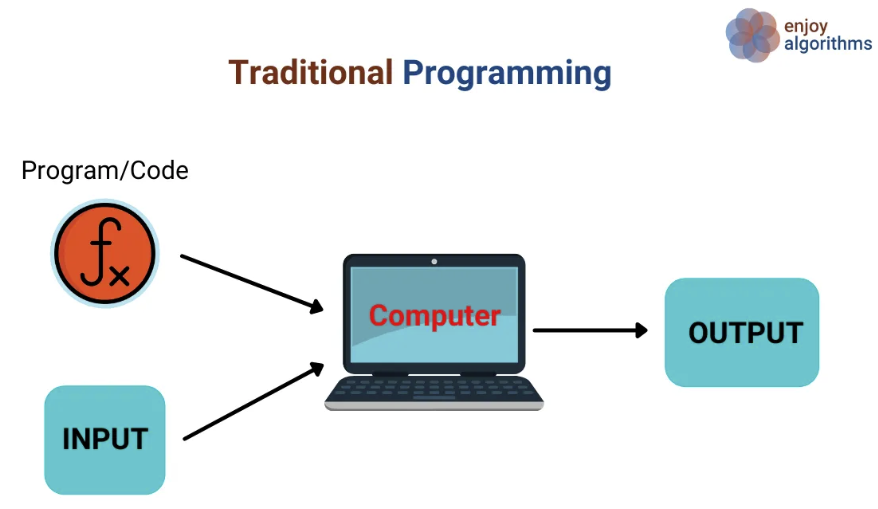
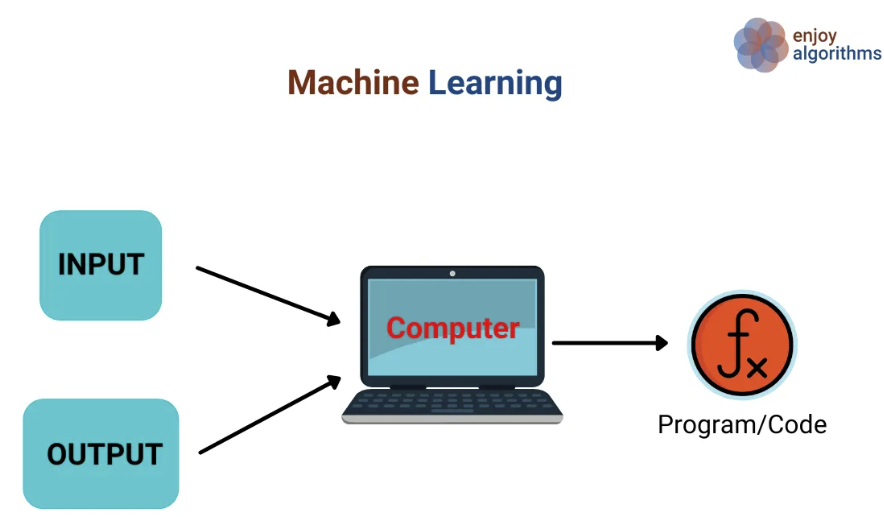
medium.com
Aprendizaje de Máquina
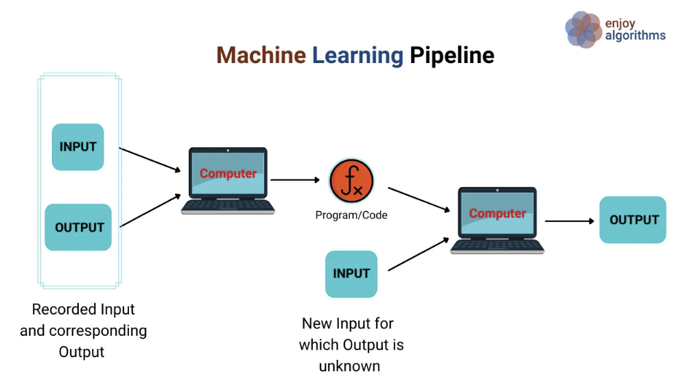 medium.comAprendizaje de Máquina
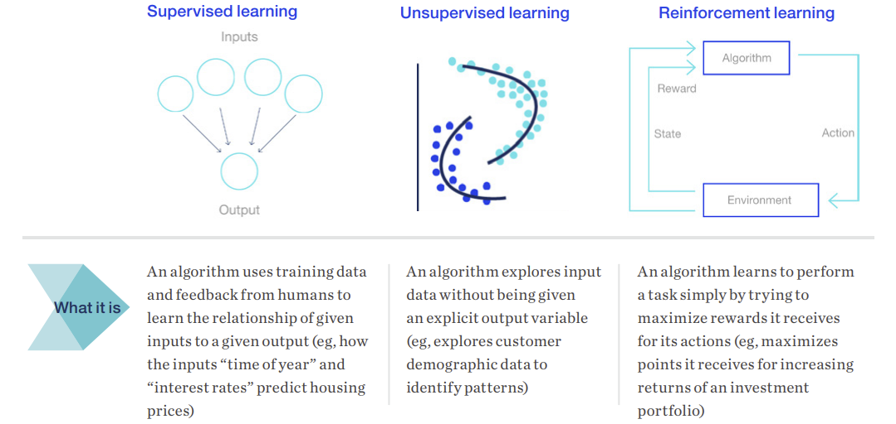 mckinsey.comHerramientas
Popularidad de Lenguajes
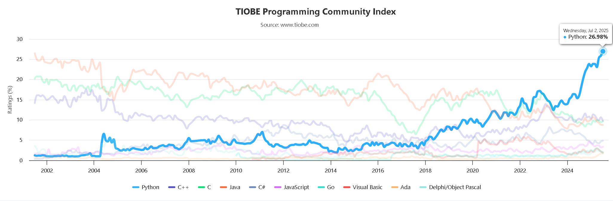 tiobe.comSklearn y Problemas de ML
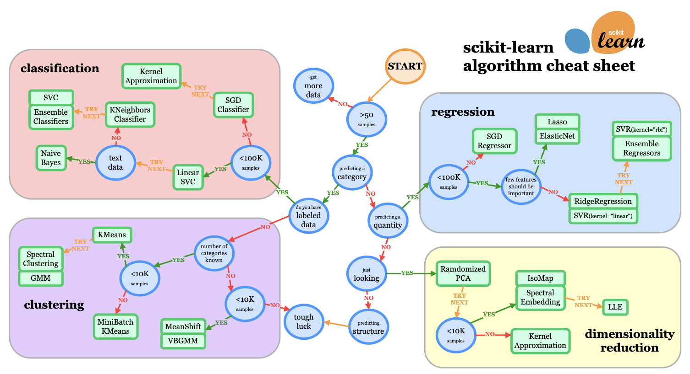Herramientas Sugeridas
| Nombre | Descripción | Enlace |
|---|---|---|
| Google Colab | Ambiente de ejecución en la nube (Python) | Colab |
| Google Gemini | Modelo LLM para aprendizaje | Gemini |
| N8N | Plataforma de workflows | N8N |
Google Colab
Ambiente de desarrollo en Python o R para el análisis de datos. Permite la ejecución en la
nube.
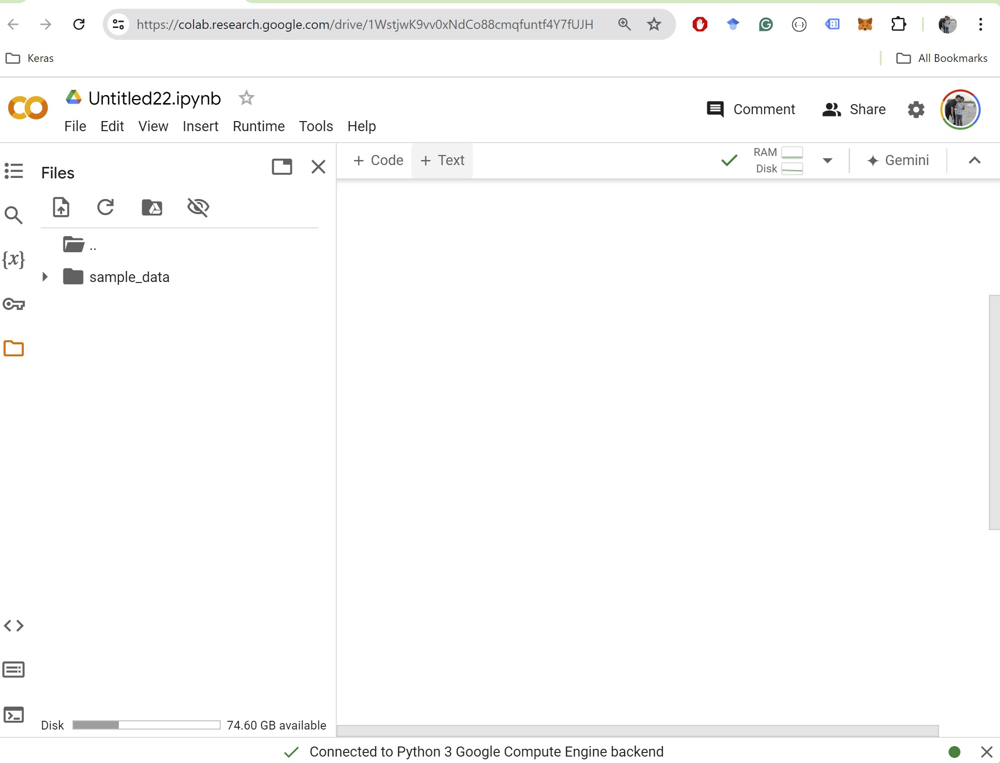
Google Colab con Gemini
Cuenta con el chat de Gemini embebido para asistir en la escritura de código.
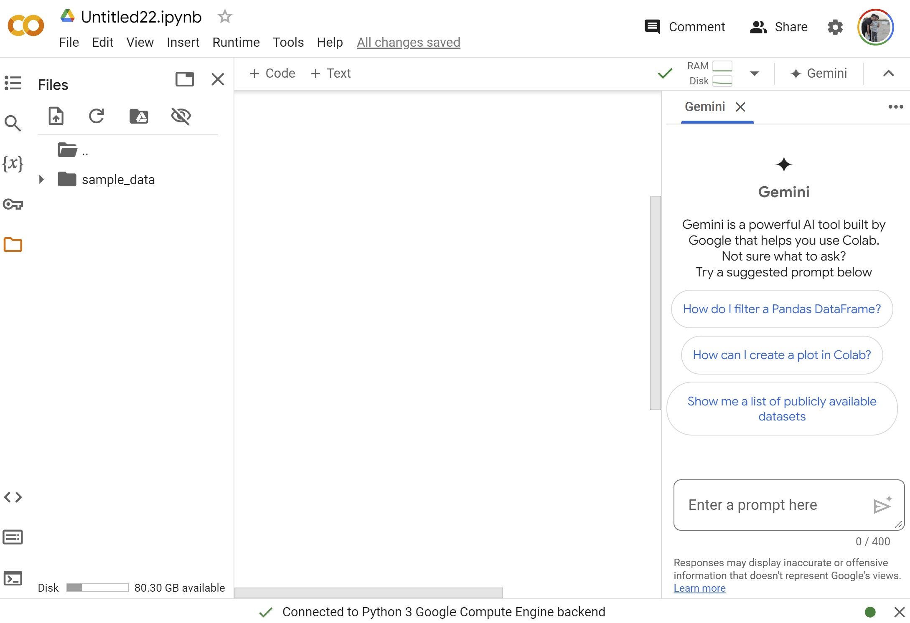
Análisis Exploratorio
Prompt: Haz un analisis exploratorio de datos del archivo de github
datasciencedojo titanic.csv usando la librería ydata-profiling.
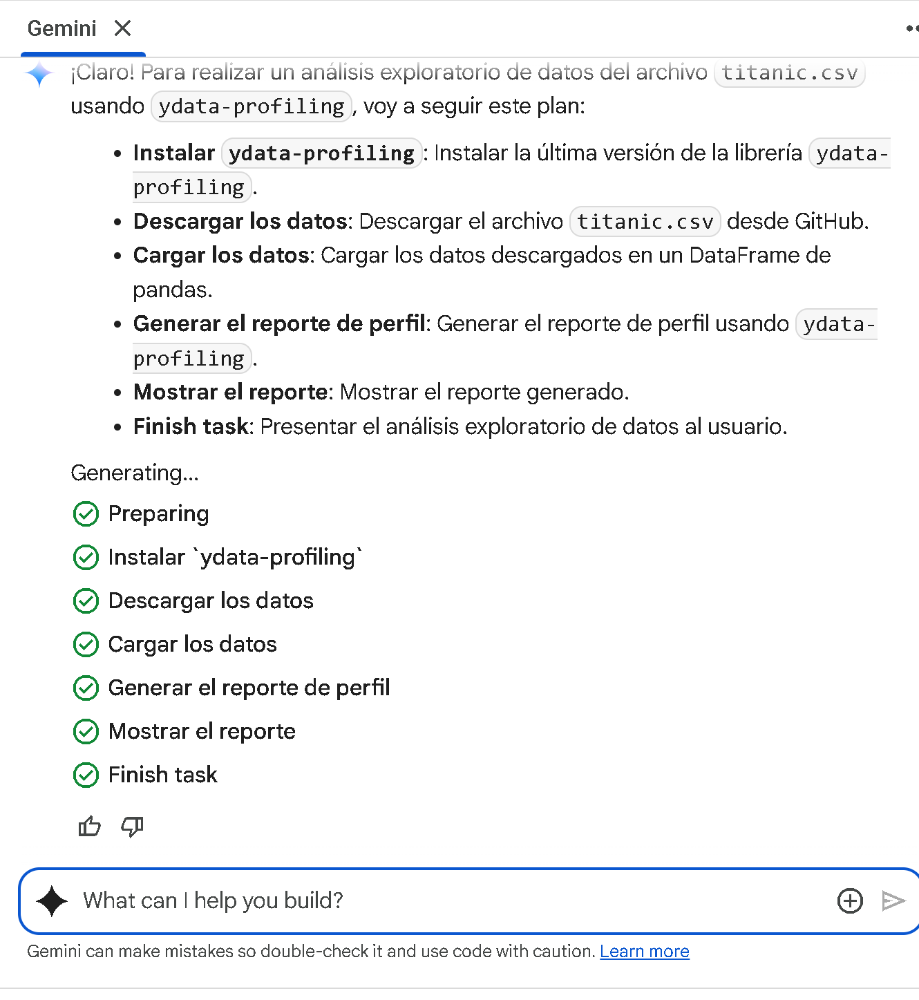
Resultados ydata-profiling
Visualización automática de estadísticas y distribuciones.